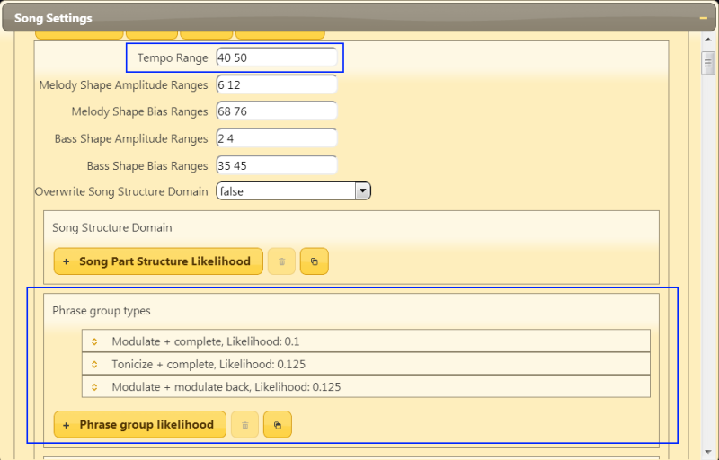
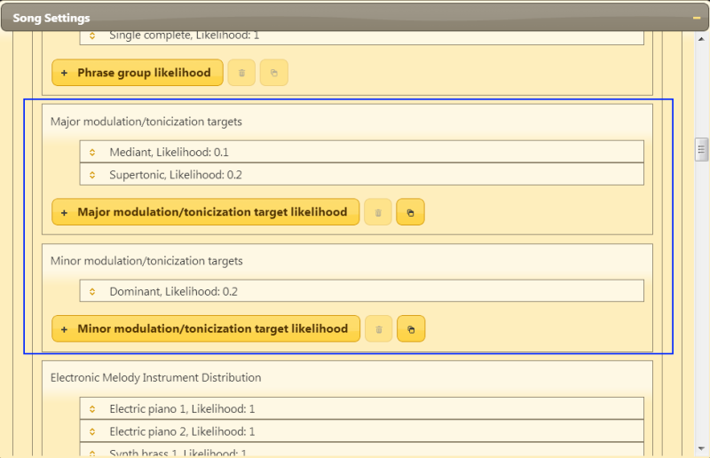
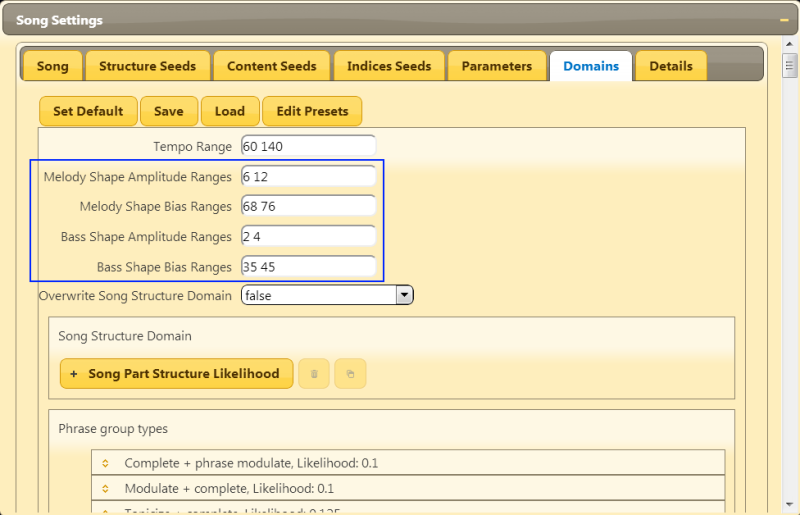

Domains Tutorial
Welcome to the fourth tutorial about Abundant Music!
This tutorial is about the "Domains" tab in the "Song Settings" window. In this tab, we will get even more control of the the resulting song.
Exploring Domains
Start by selecting the "Domains" tab in the "Song Settings" window.
Next, change the "Tempo Range" to "40 50". This means that the tempo will be between 40 and 50 beats per minute.
There is a list called "Phrase Group Types" that control what possible phrase groups to use in the song with corresponding likelihoods. We are going to force all the phrases to perform some kind of modulation or tonicization, which means that they are going to move between two different scales.
Remove all the phrase group types except for "Modulate + complete", "Tonicize + complete" and "Modulate + modulate back". To remove an item, select it by clicking on it and press the delete button. You can also mark several items by clicking and dragging or by holding down CTRL while clicking.
Now you should see something like this:
We are also going to restrict what tonicization/modulation targets to use for both the major and minor scale.
Scroll down to the two lists "Major modulation/tonicization targets" and "Minor modulation/tonicization targets". Since you think that it sounds cool to move to the mediant or supertonic in major and dominant in minor, you'll remove all other items so it looks as follows:
Now play the song! You might want to change the scale type in the "Parameters" tab so you'll hear both variants. The tutorial about parameters can show you how to change scale types.
Done! Now you know how to change the allowed phrase group types to use in a song. In later tutorials, you will learn how to more precisely control the phrase groups.
Shape Domains

Song Structure Domains

Instrument Domains

Percussion Domains